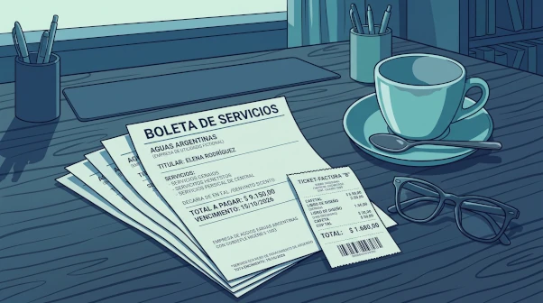
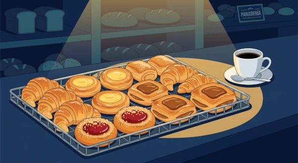

El papelito que prueba una transacción — y las muchas maneras en que el español lo divide, según la región y según el tipo de operación.
Casi todas las palabras de esta página nombran lo mismo: un papel que certifica que pagué algo. Lo interesante es dónde traza cada variedad del español sus fronteras. Una divide por tipo de transacción — entrar a un lugar no es lo mismo que viajar. Otra divide por región: lo que en Madrid es un billete, en Buenos Aires es un pasaje, y el mismo billete allá es dinero. Y algunas palabras se estiran tanto que terminan nombrando cosas sin relación: facturas que se pagan y facturas que se comen.
Velocidad 🔊
①
La entrada
Admission — the word that doesn't vary
Para entrar a un espectáculo o a un lugar que cobra acceso, la palabra es la entrada, y lo es en todo el mundo hispanohablante. Aquí no hay variación que aprender: Madrid, Buenos Aires, Ciudad de México y Bogotá dicen lo mismo. Toda la variación regional de esta página vive en el transporte, no en los espectáculos.
la entrada a + lugar · la entrada para + evento
La entrada al Ecoparque es gratuita.
Admission to the Ecoparque is free.
Compramos dos entradas para el concierto del sábado.
We bought two tickets for Saturday's concert.
Las entradas para el partido están agotadas.
Tickets for the match are sold out.
El vocabulario que la rodea
la entrada anticipada
La que se compra antes, casi siempre más barata. Lo contrario: en puerta o en boletería.
la media entrada
Rioplatense Precio reducido para estudiantes y jubilados. En otros países se dice simplemente entrada con descuento.
entrada libre · entrada gratuita
Sin cobro. Libre puede significar además que no hace falta reservar.
la platea · el palco · la butaca · la fila
Dónde me siento: la platea es el nivel bajo, el palco es el balcón privado, la butaca es el asiento y la fila es la hilera.
la entrada general
Sin asiento asignado — de pie o por orden de llegada.
②
El pasaje y el boleto
Travel — where the map splits
En la Argentina las dos palabras se reparten el trabajo según la distancia. El pasaje es para viajes largos — avión, micro de larga distancia, barco. El boleto es para el transporte urbano — colectivo, subte, tren de cercanías. México usa boleto para todo, incluido el avión. Colombia y buena parte de Centroamérica prefieren tiquete.
Viaje
Argentina
España
México
avión
el pasaje
el billete
el boleto
micro / autobús de larga distancia
el pasaje
el billete
el boleto
colectivo / autobús urbano
el boleto
el billete
el boleto
subte / metro
el boleto
el billete
el boleto
Saqué un pasaje de ida y vuelta a Mendoza.
I booked a round-trip ticket to Mendoza. — de ida y vuelta; one-way is de ida or solo ida.
El boleto de colectivo subió otra vez.
The bus fare went up again.
Los pasajeros ya están subiendo al micro.
The passengers are already boarding the coach. — el pasaje travels, el pasajero is who travels.
NOTA*
The vehicles have their own names too, and mixing these up is as noticeable as mixing up the ticket words. In Buenos Aires:
el colectivo — the city bus. Also el bondi, informally.
el micro (or el ómnibus) — the long-distance coach.
el subte — the underground. Not el metro, which is Madrid and Mexico City.
So the pairing is boleto de colectivo and pasaje de micro — the ticket word and the vehicle word travel together.
③
El billete: la trampa
The false friend inside Spanish
Esta es la palabra que hay que vigilar. En España, el billete es el pasaje: un billete de tren, un billete de avión. En Latinoamérica, el billete es solamente el dinero en papel. Pedir un billete a Córdoba en Buenos Aires no se malinterpreta — se entiende perfectamente de dónde viene quien lo dice.
Solo tengo un billete de mil pesos, ¿tenés cambio?
I've only got a thousand-peso note — have you got change?
El billete es de papel; la moneda, de metal.
Notes are paper; coins are metal.
España Saqué un billete de ida y vuelta a Sevilla.
Same sentence, Spanish word — in Argentina this would be un pasaje.
NOTA*
Why this one is worth extra care. Most regional variation is harmless — say boleto in Madrid and you'll be understood with a shrug. But billete is different because both meanings are live in both places: Spaniards also use billete for banknotes, so the word never sounds foreign, it just quietly means the other thing.
The clean way to hold it: billete always means banknote everywhere. In Spain it means one additional thing. Learn the smaller, universal meaning as the default and you can't go wrong in either country.
NOTA*
Two related money words worth having on the trip. Change you get back from a purchase is el vuelto in Latin America and el cambio or las vueltas in Spain — but el cambio also means small denominations and currency exchange in both. And un billete chico is a small-denomination note, which is what you'll actually be hunting for in Buenos Aires.
④
Dónde se compran y con qué verbo
The window, and what you do at it
El lugar donde se venden tiene dos nombres regionales y uno neutro. La boletería es latinoamericana, la taquilla es española, y la ventanilla — la ventana misma del mostrador — funciona en todas partes y saca del apuro cuando no me acuerdo de cuál toca.
la boletería
Lat. Am. La del cine, el teatro, la estación. Una sola r: bo-le-te-rí-a.
la taquilla
España El mismo lugar. Además, la recaudación de una película (un éxito de taquilla) y el armario del gimnasio o del colegio.
la ventanilla
La ventana del mostrador, en cualquier país. Comprar en ventanilla se opone a comprar por internet.
la tarjeta SUBE
Rioplatense La tarjeta recargable del transporte en Buenos Aires. Se carga y se apoya en el lector al subir.
el abono
El pase por varios viajes o varias funciones — de temporada, mensual, semanal.
Where do I get the tickets? — sacar is the everyday verb; comprar is never wrong but sounds flatter.
Reservé por internet y las retiro en la boletería.
I booked online and I pick them up at the box office.
¿Puedo canjear este código por una entrada?
Can I redeem this code for a ticket?
Tengo que cargar la SUBE antes de salir.
I need to top up the SUBE before heading out.
¿Quedan entradas para la función de las ocho?
Are there tickets left for the eight o'clock show?
⑤
Lo que pago: factura, recibo, boleta, cuenta
Bills, invoices and receipts

Estas cuatro no son sinónimos: marcan momentos distintos de una misma operación. Primero llega lo que me cobran, después queda la prueba de que pagué.
Palabra
Cuándo aparece
Qué es
la factura
antes de pagar
El documento detallado de lo que se debe. En la Argentina es además un comprobante fiscal (factura A, B, C).
la boleta
antes de pagar
La de un servicio: la boleta de luz, de gas, de agua. En Chile, en cambio, es el comprobante de una compra.
la cuenta
antes de pagar
Lo que se pide en un restaurante o un bar.
el recibo
después de pagar
La prueba de que ya pagué. En la Argentina, el recibo de sueldo es la liquidación mensual.
La cuenta, por favor.
The bill, please. — the single most useful phrase on this page.
¿Me da la factura, por favor?
Could I have the invoice, please?
Guardá el recibo por si hay que reclamar.
Rioplatense Keep the receipt in case you need to complain. Neutral: guarda el recibo.
Todavía no llegó la boleta del gas.
The gas bill hasn't arrived yet.
Dos palabras más del mostrador
el ticket · el tique
El papelito de la caja del supermercado. Anglicismo asentado; la RAE propone tique, y tiquete en Colombia y Centroamérica. En la Argentina se escribe casi siempre ticket.
el comprobante
La palabra paraguas: cualquier papel que comprueba algo — un pago, una reserva, una transferencia. Útil cuando no sé cuál de las otras corresponde.
NOTA*The figurative one.Pasar factura means to make someone pay for something — not money, consequences. Los años le pasaron factura: the years caught up with him. Esa decisión le va a pasar factura: that decision is going to cost him. Common in journalism and everyday speech alike.
⑥
Las otras facturas: las de la panadería
The pastries

En la Argentina y el Uruguay, las facturas son también los bollos dulces de la panadería. Se compran por docena o media docena, y son el acompañamiento clásico del mate o del café. La palabra no viaja: en España lo equivalente es la bollería, y en México, el pan dulce.
la medialuna
La más conocida. De manteca: dulce, brillante, más blanda. De grasa: más seca, salada, más chica.
el vigilante
Alargada, con una franja de dulce de membrillo o batata por encima.
la bola de fraile
Redonda y frita, rellena de dulce de leche o crema pastelera.
el cañoncito
Un tubo de hojaldre relleno de dulce de leche.
el librito · la tortita negra
El librito es de hojaldre en capas; la tortita negra es chata y cubierta de azúcar quemada.
Me da media docena de facturas, por favor.
Half a dozen pastries, please.
Dos medialunas de manteca y un café con leche.
Two butter croissants and a latte.
NOTA*On churros. They're a useful reference point coming from Spain, but they aren't generally counted among las facturas — churros are their own thing, sold at a churrería or a café rather than by the dozen at the panadería counter. The facturas family is the baked, filled, tray-sold set above.
⑦
Una palabra, varios mundos
Where these words go when they leave the counter
Casi todas estas palabras tienen una segunda vida fuera del mostrador. Reconocerlas en esos otros contextos evita muchos tropiezos de lectura.
Palabra
Otros sentidos
la entrada
La puerta o el vestíbulo de un edificio · el primer plato de una comida · España el pago inicial de una casa · en plural y coloquial, las entradas del pelo que retrocede.
la factura
Los bollos de la panadería · pasar factura, hacer pagar las consecuencias · la hechura de un objeto: un mueble de buena factura.
la taquilla
España El armario del gimnasio o del colegio · la recaudación de una película: un éxito de taquilla.
el boleto
Rioplatense El boleto de compraventa, el contrato previo a la escritura de un inmueble.
el pasaje
Un fragmento de un texto o de una obra musical · un callejón o galería entre dos calles — frecuente en los nombres de calles porteñas.
el billete
España El pasaje de tren o de avión — el sentido que no cruza el Atlántico.
NOTA*
The pattern behind all of them. Each of these words started as a name for a physical slip of paper and then drifted along one of two paths: toward the place the slip gets you (entrada → doorway, pasaje → passageway), or toward the transaction the slip records (factura → the making of a thing, taquilla → the takings).
Once you see that, the second meanings stop looking like unrelated homonyms to memorise and start looking like the same word stretched in a predictable direction.